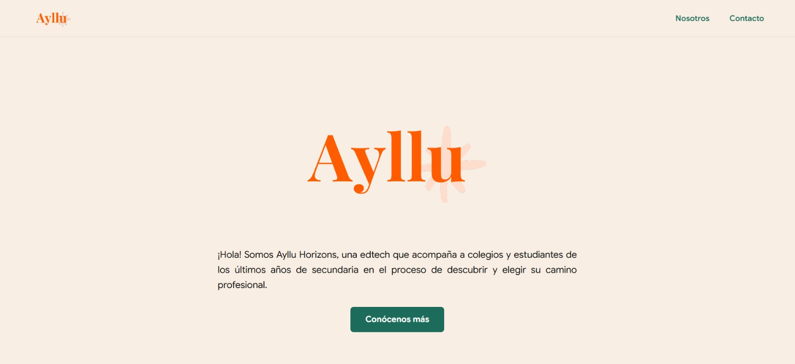
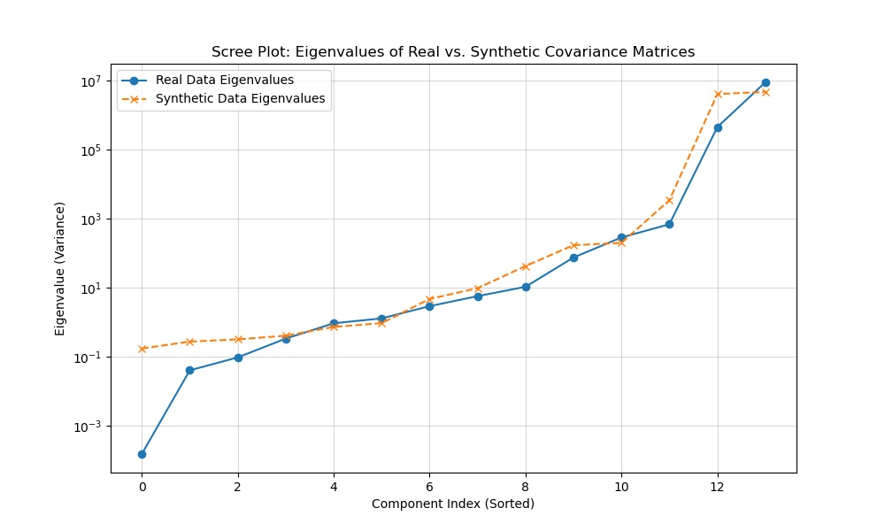
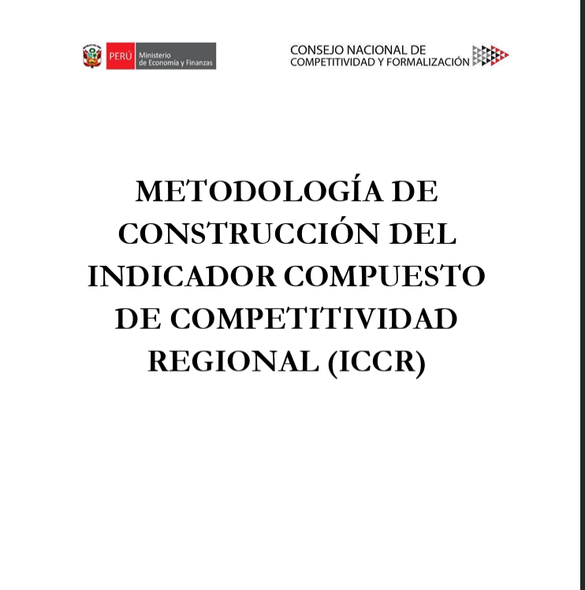
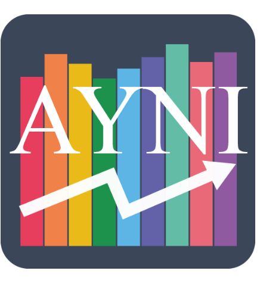
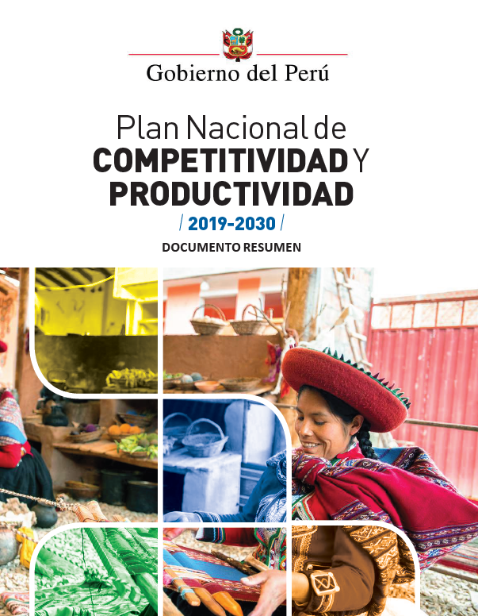

About me
JosePT16Economist and developer with a strong quantitative background, specialized in analytics, information processing, and applied artificial intelligence.
I design solutions to transform data and loosely structured information, including documents, PDFs, text, and administrative records, into analysis, indicators, digital products, and decision-making tools. My experience combines statistical methods, document processing, automation, and software development with knowledge of public policy and how state institutions operate.
Areas of Expertise
Selected Work
Open Perú: Plataforma de acceso a información legislativa
Plataforma civic-tech orientada a facilitar el acceso y análisis de información pública del Congreso peruano. Integra datos sobre proyectos de ley, votaciones y congresistas mediante procesos automatizados de extracción y transformación de documentos. El proyecto combina procesamiento documental, bases de datos, desarrollo web y visualización para convertir información dispersa en datos accesibles y reutilizables.
View Platform →Dashboard de analisis de comercio exterior y simulador de aranceles de EEUU.
Dashboard interactivo para analizar los patrones de comercio internacional de Estados Unidos e identificar industrias potencialmente vulnerables ante aumentos de aranceles o conflictos comerciales. Integra datos de comercio, producción y elasticidades para explorar importaciones y exportaciones por país y producto, además de simular los posibles efectos de cambios arancelarios sobre el bienestar económico.
Repositorio GitHub →ArtRoom-AI: Aplicativo web con chatbot y generación de imagenes a través de IA.
Aplicación experimental que explora el uso de inteligencia artificial generativa para aprender e interactuar con arte. Integra un chatbot RAG sobre artistas, generación y edición de imágenes mediante modelos de difusión y un modelo ajustado con obras de Pancho Fierro. El proyecto combina LLMs, embeddings, búsqueda vectorial y generación multimodal en una experiencia web interactiva.
View Project →
Ayllu Horizons: Plataforma Edtech de orientacion vocacional con IA
EdTech de orientación vocacional diseñada para ayudar a estudiantes a tomar decisiones educativas más informadas. La plataforma combina evaluaciones de intereses, exploración de carreras, información sobre retornos y costos educativos, y herramientas de reflexión. El proyecto integra diseño de producto, analítica e inteligencia artificial y actualmente se encuentra en desarrollo y validación mediante pilotos educativos.
View Project →Democracy Paradox: Articulo con graficos interactivos sobre la relacion de democracia y crecimiento
Artículo web interactivo que explora la relación entre democracia, crecimiento económico y retroceso democrático a partir del trabajo de Acemoglu y Robinson. Combina evidencia económica con visualizaciones estáticas, gráficos interactivos y mapas animados para mostrar cómo desigualdad, represión y dinámicas regionales pueden influir en los procesos de democratización y autocratización.
View Project →
Predicción de recesiones con ML
Proyecto de machine learning para identificar y anticipar episodios de crisis bancarias utilizando indicadores macroeconómicos de Estados Unidos desde 1953. Se construyeron modelos de regresión logística regularizada y redes neuronales utilizando variables de FRED, incluyendo inflación, tasas de interés, bonos y actividad económica, evaluando su capacidad para detectar eventos relativamente infrecuentes.
Trabajo público

Índice Compuesto de Competitividad Regional
Índice compuesto para medir competitividad regional. Participación en análisis, construcción metodológica y comunicación de resultados.

AYNI MEF
Participación en la primera versión: diseño conceptual, coordinación con desarrolladores, estructura de base de datos y definición del sistema de llenado y reporting.

Plan Nacional de Competitividad y Productividad
Contribución en gráficos, análisis y redacción para comunicar medidas de política pública y seguimiento de competitividad.